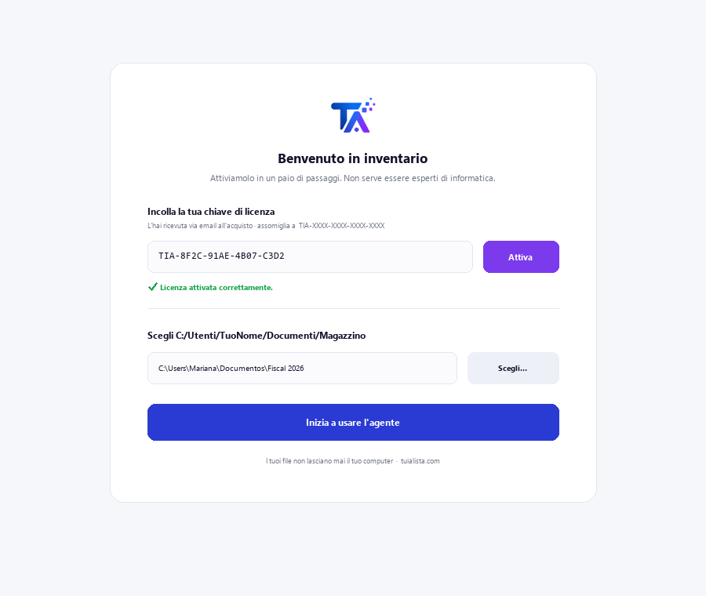
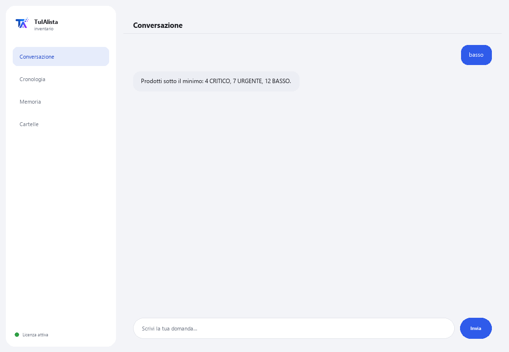

Agente Magazzino
Rileva cosa riordinare, quanto vale il tuo magazzino e dove hai capitale immobilizzato — in pochi secondi.
Cosa risolve e cosa ti serve?
Gestire il magazzino è un equilibrio: se manca, perdi vendite; se è in eccesso, hai denaro immobilizzato. Verificarlo a mano nei fogli Excel è noioso e quasi nessuno lo fa in tempo. Questo agente trasforma i tuoi file di magazzino in un pannello di controllo per acquisti e capitale.
- Ti serve: la tua chiave di licenza (TIA-XXXX-XXXX-XXXX-XXXX) e la cartella con i tuoi file di magazzino (Excel o CSV). Niente Python né conoscenze tecniche.
- Primo risultato in meno di 5 minuti: installi, attivi, scegli la tua cartella ed esegui basso per vedere quale prodotto sta per esaurirsi.
- I dati della tua azienda non lasciano mai il tuo computer — l'analisi gira in locale.
soporte@tuialista.com o visita tuialista.com/soporte — di solito rispondiamo lo stesso giorno lavorativo.1 Cosa fa questo agente
Gli indichi la cartella con i tuoi file di magazzino e lui:
- Li legge (Excel .xlsx e CSV), riconoscendo automaticamente le colonne (in italiano, spagnolo o inglese).
- Rileva i prodotti sotto il minimo e la loro urgenza.
- Suggerisce quanto riordinare per ogni prodotto (in base alla rotazione o a un valore predefinito).
- Calcola il valore totale del magazzino, al costo e al prezzo di vendita, per categoria e fornitore.
- Identifica le scorte morte (senza movimento) che immobilizzano capitale.
- Classifica i prodotti per analisi ABC (dove è concentrato il valore).
- Rileva eccesso di magazzino.
- Risponde alle tue domande: “cosa conviene riordinare per primo?”
Risultato: sai cosa comprare, cosa liberare e dove sono i tuoi soldi, in pochi secondi.
2 Installazione (2 minuti)
Per Windows. Non serve internet permanente né caricare nulla sul cloud.
Scarica l'installer da tuialista.com/descargar (agente Magazzino) e aprilo. Crea un collegamento sul desktop con il logo — non richiede Python né terminale.
Doppio clic sulla nuova icona. Incolla la tua chiave di licenza (ricevuta via email all'acquisto) e premi Attiva. Vedrai un segno di spunta verde quando è valida.
Seleziona la cartella con i tuoi file di magazzino e premi Inizia a usare l'agente. La prossima volta si avvia direttamente — ricorda la tua chiave e la tua cartella.

3 Come usarlo
L'agente apre una finestra di chat, come un'app di messaggistica — non è uno schermo nero da programmatore. Scrivi il tuo comando o la tua domanda nella casella di testo in basso, premi Invia (o Invio), e la risposta appare come un messaggio, proprio come in questa immagine reale:

I comandi seguenti sono le parole che puoi scrivere nella stessa casella di testo:
> basso [soglia]Prodotti con scorte uguali o inferiori al minimo (o alla soglia indicata), ordinati per urgenza (CRITICO / URGENTE / BASSO) e con giorni residui stimati se c'è rotazione. Es.: basso 5.
> riordinarePer ogni prodotto basso, suggerisce quanto ordinare (in base alla rotazione per ~30 giorni, o un valore predefinito) e stima il costo.
> valoreValore totale al costo e al prezzo di vendita, margine potenziale e suddivisione per categoria e fornitore.
> morto [giorni]Prodotti con scorte ma senza movimento negli ultimi N giorni (90 di default), ordinati per valore immobilizzato. Es.: morto 120.
> abcClassificazione A/B/C (Pareto) per valore di magazzino: i “A” concentrano la maggior parte del valore e meritano più attenzione.
> eccessoProdotti con scorte molto superiori al minimo e il capitale legato a quell'eccesso.
> domanda libera?Scrivi qualsiasi domanda in linguaggio naturale, es.: quali prodotti della categoria bevande stanno per esaurirsi?
> esciTermina la sessione (funziona anche exit).
Vuoi vedere le 20 ricette complete con un esempio reale per ciascuna? Consulta il Catalogo delle ricette — un documento separato data la sua lunghezza: catalogo_recetas.pdf insieme a questo manuale, o la versione interattiva su tuialista.com/guia/inventario/recetas.
4 Esempi di uso comune
L'acquisto della settimana
basso → riordinare — vedi cosa manca e quanto ordinare, con il costo stimato.
Liberare denaro bloccato
morto 90 → eccesso — rilevi il capitale immobilizzato in prodotti senza movimento o in eccesso.
Concentrare la tua attenzione
abc — sai quali prodotti “A” curare di più perché concentrano il valore.
Una richiesta puntuale
qual è il valore totale del mio magazzino al costo?
5 Domande frequenti
I miei dati vengono caricati su internet?
Quali formati accetta?
Devo nominare le mie colonne in modo esatto?
Davvero “prevede” quando riordinare?
Ho bisogno della colonna di rotazione o dell'ultima uscita?
In quale lingua mi risponde?
Modifica i miei file?
Posso cambiare la cartella dei dati?
I calcoli sono esatti?
Può leggere più file?
6 Risoluzione dei problemi
Mostra “CSV/XLSX senza colonne riconosciute”
Non carica un .xlsx
Mostra “Licenza non valida” o chiede di riconnettersi
“Nessun fornitore IA configurato”
Nessuna di queste soluzioni ha risolto il tuo problema? Scrivici direttamente — saremo felici di rivederlo con te.
soporte@tuialista.com o visita tuialista.com/soporte — di solito rispondiamo lo stesso giorno lavorativo.7 Privacy e riservatezza
I dati della tua azienda non lasciano mai il tuo computer.
- L'agente legge e analizza i tuoi file in locale, sul tuo stesso dispositivo. Non li carica su nessun server.
- Tutti i calcoli (scorte basse, valore, ABC, eccesso, scorte morte) avvengono sul tuo dispositivo.
- L'unica cosa che viaggia su internet è: (1) una verifica che la tua licenza sia attiva — che non include i tuoi dati —, e (2) quando fai una domanda libera, viene inviato un riepilogo del magazzino rilevante al motore IA per redigere la risposta.